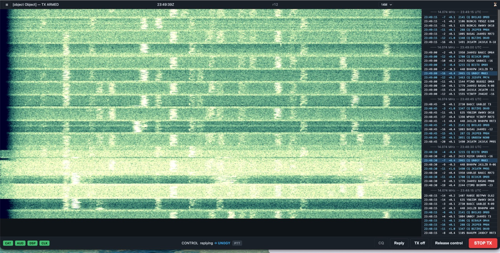

你熟悉的 Improved 解码器，封装进 headless 服务器，配以安全、确定的时隙调度。
将精选的 Improved ft8var 源码编译为 C ABI 共享库。
FT8 标准 + Improved 解码，OpenMP Auto/1–12 分带；FT4 在 FT8 验收后加入。
Fortran/OpenMP 状态只存在于独立 Worker 进程、经监督 IPC 访问。 所有 DSP 调用走单一 binding 锁——没有跨线程 packjt77 竞态， OpenMP 线程绝不回调 Python。
每个调度决策都使用 floor(epoch/TRperiod)——唯一的时隙身份规则。
RX、TX、解码与编排全部对齐同一绝对 UTC 时隙网格。
操作者选定目标——sequencer 在正确的对侧 TX 时隙自动完成一场标准 QSO， 配手动回复决策窗口、fit guard 与中央 PTT 安全控制器。
串口只有一个 owner：rigctld。服务器经 loopback TCP 走 CAT—— 频率、模式、PTT——任何模块都不得直接打开串口设备。
每场完成的 QSO 落入 canonical SQLite 存储，sequencer 完成时捕获 起始/波段上下文，并可导出 ADIF 交给你的日志软件。
FT8 通带约 0–3 kHz，因此频谱帧只输出 3 kHz 跨度——没有空白半画布、 载荷减半，客户端把每个 bin 映射到整个瀑布图。
为横放在电台旁的手机打造的移动优先 PWA：横屏完整控制， 竖屏降级为观察者/STOP 视图。无构建步骤——纯 vanilla JS 模块。
v1.0.0 正在真实 FT-710 电台上运行。2026-08-03 实战闭环了 RX/TX 根因—— UTC-ring 驱逐错位、Replay 对侧时隙相位、手动回复决策窗口—— 真实 FT8 QSO 已通过移动驾驶舱持续完成。2026-08-04 补齐了 FT-710 电台控制：滤波器带宽与 ATT / PREAMP / AGC / RF 增益现改走原始 CAT 帧 （hamlib 的 FT-710 电平路径不可靠，且 AGC AUTO 编码有误）， 已在站内电台实机验证。

驾驶舱实况：20 米波段 14.074 MHz 的 FT8 频带活动与实时解码，含发射状态与时隙计时。
在线边缘：https://radio.vlsc.net:9988——Caddy TLS 配
acme.sh DNS-01 证书；FastAPI 与 rigctld 保持仅本机监听。
macOS 或 Linux。DSP 核心需要 gfortran-mp-13 + FFTW3f，服务器本体一个 Python venv 即可。
CMake 将 Fortran shim + 精选 Improved 源码编译为 wsjt_core。
cmake -S dsp -B dsp/build -DCMAKE_Fortran_COMPILER=gfortran-mp-13 && cmake --build dsp/build -j
Editable 安装拉取 FastAPI、uvicorn、numpy 与测试依赖。
python3 -m venv venv && venv/bin/pip install -e '.[dev]'
Improved sync8var 在线程栈分配大型工作数组——10 MB，须在 NumPy/OpenMP 加载前设置。
export OMP_STACKSIZE=10M
设置 MRRC_FT8_* 环境变量（密码哈希用 --hash-password 生成、呼号、网格、音频设备、允许主机）。
venv/bin/python -m server.main
打开驾驶舱、登录、选定电台并完成一场 QSO。完整部署模板（Caddy、LaunchAgent、systemd）在 deploy/。
https://your-host:9988 → 登录 → 选波段 → 开打
应用只绑定回环地址，公网入口由 Caddy 承担。macOS LaunchAgent、Linux
systemd 单元与 Caddy 配置都在 deploy/。
为 MRRC_FT8_PASSWORD_HASH 生成 Argon2id 哈希——交互式提示，密码不落入 shell 历史。
venv/bin/python -m server.main --hash-password
.env（或服务环境文件）须定义哈希、呼号与网格；允许主机与音频设备可选。缺前三项服务拒绝启动。
MRRC_FT8_PASSWORD_HASH=… MRRC_FT8_MY_CALL=YOURCALL MRRC_FT8_MY_GRID=…
macOS：复制 deploy/com.mrrc.ft8.plist 到 ~/Library/LaunchAgents/ 并 bootstrap。Linux：安装 deploy/mrrc-ft8.service、创建 /etc/mrrc-ft8.env、systemctl enable --now mrrc-ft8。
launchctl bootstrap gui/$(id -u) ~/Library/LaunchAgents/com.mrrc.ft8.plist
复制 deploy/Caddyfile 到 /etc/caddy/ 并以 LaunchDaemon 运行 Caddy；将 MRRC_FT8_ALLOWED_HOSTS 设为同一域名以通过 Host/Origin 校验。
reverse_proxy 127.0.0.1:8000
本站在仓库内随附——website/deploy.sh 会备份、上传到 www.vlsc.net/mrrc_ft8 并重载 nginx。
cd website && ./deploy.sh
浏览器 → TLS 边缘 → FastAPI 控制面 → 受监督 DSP Worker → 共享原生库。 每个资源只有一个 owner。